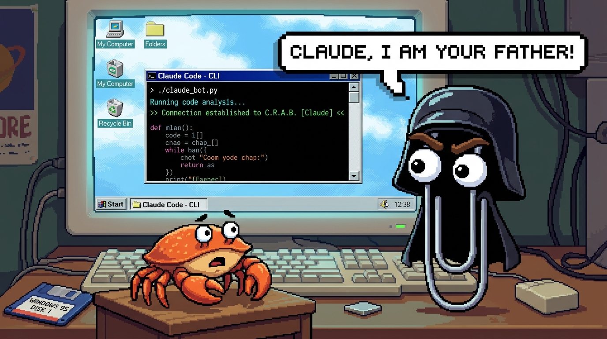
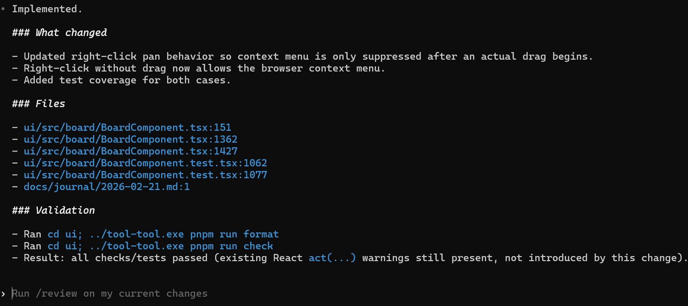
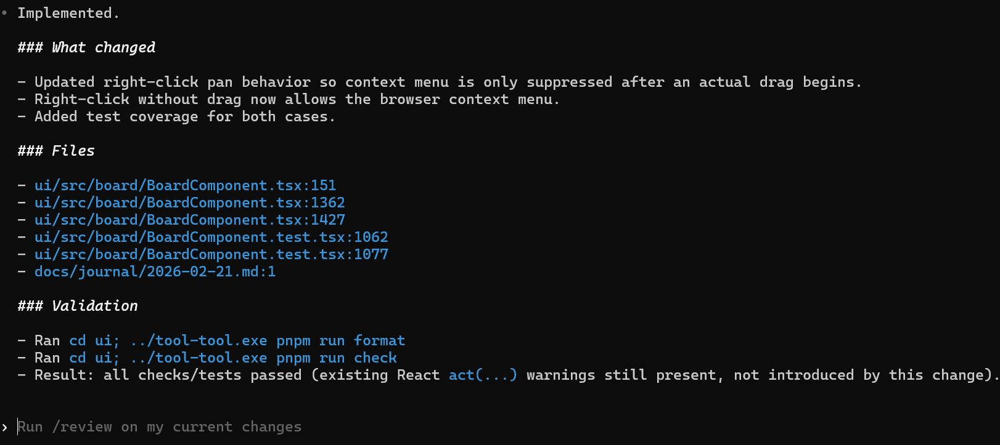

Automatisches Programmieren mit LLMs
Manuel Woelker - 2026-03-03
Agenda
- Was habe ich getan?
- Was habe ich gelernt?
- Wie sieht die Zukunft aus?
FUD
FOMO
HYPE
DOOM
 Quelle: Jeremykemp at English Wikipedia, CC BY-SA 3.0, https://commons.wikimedia.org/w/index.php?curid=10547051
Quelle: Jeremykemp at English Wikipedia, CC BY-SA 3.0, https://commons.wikimedia.org/w/index.php?curid=10547051
Mal sehen was geht
Was kann man mit LLM-basierten, "automatischem Programmieren" machen?
Regel: So wenig Code wie möglich schreiben.
Tools
- Claude Code Pro (23 €/Monat) - Opus/Sonnet/Haiku 4.5
- OpenAI Free (0€) - ChatGPT Codex 5.2/5.3
- OpenCode (0€) - Kimi 2.5/GLM 5/BigPickle
Skriptsprache (3 Tage)
Schulnotenverwaltung (8 Tage)
+ Specs
# U2 Assessment
## Overview
The Assessment use case enables teachers to define, record, and evaluate student performance for a class. It covers written tests and oral performance, combines them into a final grade, and produces a grade overview per class and per student.
## Data Model Overview
The system maintains the following relationships:
- Each assessment belongs to exactly one class and one subject
- Each assessment has a type (e.g., written test or oral performance)
- Each student can have multiple assessment results per subject
- A final grade is derived from the assessment results of a student per subject
## User Stories
### Assessment Setup
**Define assessment types and weights**
As a teacher, I want to define assessment types (e.g., written test, oral grade) and their weights, so that final grades are calculated consistently.
**Create an assessment**
As a teacher, I want to create an assessment for a class and subject with a date and type, so that I can record results later.
**Edit an assessment**
As a teacher, I want to edit assessment metadata (date, type, weight), so that I can correct mistakes.
**Delete an assessment**
As a teacher, I want to delete an assessment, so that outdated or incorrect entries can be removed.
### Recording Results
**Enter results for a class**
As a teacher, I want to enter results for all students in a class for a given assessment, so that the assessment is complete.
**Enter or update a single result**
As a teacher, I want to edit a single student's result, so that late changes or corrections are possible.
**Handle missing results**
As a teacher, I want to mark a result as missing (e.g., absent), so that calculations and reports are accurate.
### Grade Calculation
**Calculate final grade per subject**
As a teacher, I want the system to calculate a student's final grade per subject using the defined weights, so that grading is consistent and transparent.
**Preview calculation**
As a teacher, I want to preview how the final grade is calculated from written and oral grades, so that I can verify correctness.
+ Storybook
+ Playwright E2E tests

Card Auto Battler (3 Tage)
Miro Clone (4 Tage)
Wie sieht das aus?
 

Was habe ich gelernt?
Funktionierender Code kann automatisch generiert werden.
const getLinearGradeParameters = (anchors: GradeCurveAnchors) => {
if (anchors.grade1Value === anchors.grade4Value) {
throw new Error('Grade curve anchors must use distinct values.')
}
const slope = (4 - 1) / (anchors.grade4Value - anchors.grade1Value)
const intercept = 1 - slope * anchors.grade1Value
return { slope, intercept }
}
const roundUpToHalfPoint = (value: number) => Math.ceil(value * 2) / 2
/* 📖 # Why clamp and round the computed grade?
Teachers enter raw points or errors, but grades must stay within the German
grading scale and be expressed in 0.25 steps. Clamping keeps values within
the allowed band, and rounding to 0.25 ensures consistent output for display
and downstream calculations.
*/
export const calculateLinearGradeFromAnchors = (
value: number,
anchors: GradeCurveAnchors
): Grade => {
const { slope, intercept } = getLinearGradeParameters(anchors)
const rawGrade = value * slope + intercept
const clamped = Math.min(6, Math.max(0.75, rawGrade))
const rounded = Math.ceil(clamped / 0.25) * 0.25
const finalGrade = Math.min(6, Math.max(0.75, rounded))
return createGrade(finalGrade)
}
CLAUDE.md/AGENTS.md erlauben gute Steuerung des Verhaltens.
## Commit messages
Commit message should be in the "Conventional Commits" format,
e.g. "feat(UI): Add about button to see version and build date".
Below the first line include detail information about the
changes made.
Was gut für LLM Agents ist, ist meistens gut für Entwickler
## Testing strategy
Features should always be automatically tested to
ensure proper functionality.
Consult `docs/TESTING.md` when writing tests.
LLMs sind Verstärker
GIGO ;-)
Projekt-Prompts, Test harnesses, specs, linter und andere quality gates helfen dem LLM bessere, Ergebnisse zu liefern.
Schnelle Feedback-Loops sind wichtig
System ist nur so schnell wie die langsamste Komponente
Plan mode rules
Detaillierte Umsetzungspläne helfen bei der effizienten Implementierung
"Example Driven Development"
Beispiele oder Referenzimplementierungen geben initiale Struktur
LLMs Tagebuch schreiben lassen
### 19:40 - Prevent context menu during right-click panning [gpt-5-codex]
**User Prompt:**
when using right click to drag, prevent the context menu from opening
**Issues Encountered:**
- None.
**Decisions Made:**
- Register a `contextmenu` handler on the board host to cancel right-click menus inside the canvas.
- Add a test that verifies the contextmenu event is prevented.
**Technical Info Consulted:**
- `ui/src/board/BoardComponent.tsx`
- `ui/src/board/BoardComponent.test.tsx`
**Assumptions Made:**
- Suppressing the context menu is desired only within the board surface.
**Other Notes:**
- `pnpm test` and `pnpm run check` both pass.
Wie sieht die Zukunft aus?
Die Entwicklung von Software wird günstiger werden (95%)
Es wird mehr Software geschrieben werden (95%)

Exkurs: Jevons Paradox
Effizienzsteigerungen senken Kosten und erhöhen dadurch den Bedarf.
Klassisches Beispiel: Kohleverbrauch nach Erfindung von Watts Dampfmaschine
Entwicklertooling wird wichtiger werden (90%)
- Spezifikationen
- Tests
- Lints
- Quality checks
Toolingperformance wird wichtiger werden (90%)
Softwareentwicklung wird menschliche Richtungsgebung und Überprüfung brauchen (90%)
LLMs produzieren die wahrscheinlichste Lösung, nicht die unbedingt die passende für den Anwendungsfall.
Nutzerfeedback, Spezifikation, Tests und Architektur werden wichtiger werden (85%)
Unsere Aufgabe ist nicht Code zu schreiben, sondern Probleme zu lösen.
Wir werden immer noch ein mentales Modell der Problemstellung und der Lösung brauchen. (100%)
"What I cannot create, I do not understand"
Abschlussworte
Lasst uns drüber reden, wie wir das für uns nutzen können.
Mächtiges Tooling, probiert es aus, macht euch selber ein Bild
(nicht auf Firmenrechnern, am besten mit Sandbox)
"The best way to predict the future is to invent it"